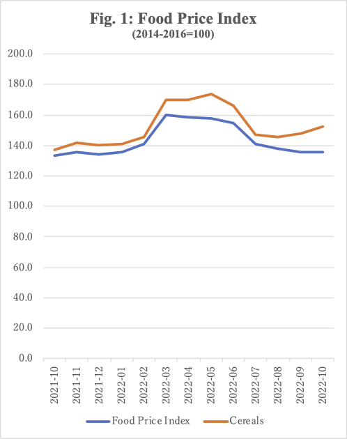
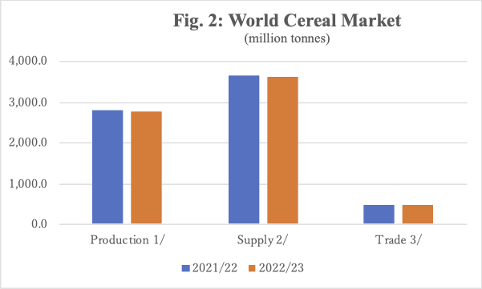
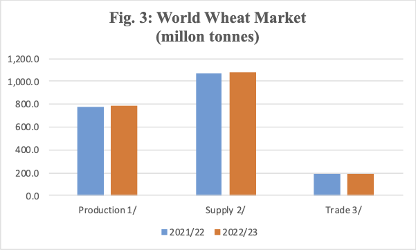

Factors of Food Price Instability -- From the Experience of the Ukrainian War --
11/18 2022
Author: Naoto Yoshikawa, Ph. D.
It is generally accepted that stable food prices require a stable quantity of food supply and demand that matches its supply volume. However, the recent Russian invasion of Ukraine has had a more significant impact on food prices, especially cereal price fluctuations, than the quantity of its supply. It is people's uncertainty and feeling of insecurity about the food supply in the future. Let us look at the fluctuations in food prices since the beginning of the war in Ukraine and find out what affects food prices more than the actual supply.
World food prices rose steeply when Russia invaded Ukraine on February 24, 2022. Particularly prices for cereal and vegetable oil, which Ukraine and Russia have been exporting, skyrocketed from February, rising 33.6% compared to prices during the same period the previous year, and in March 2022, they reached their highest historical prices (FAO COUNCIL 2022). High prices then continued through June. In July, cereal exports from Ukraine were expected to resume due to an agreement between Ukraine and Russia (the Black Sea Grain Initiative), and prices began to fall rapidly in July; although the rate of price decline slowed in August, they continued to fall in September and October (FAO/a 2022). Cereal prices continued to fall until August, parallel to food prices, but since September and October, they have continued to rise gradually, as shown in Figure 1 (FAO/a 2022). According to FAO analysis, this rise is due to concerns about continuing the Black Sea Grain Initiative (FAO/a 2022).

The quantities of the global production, supply, use, and trade (the amount of cereal bought and sold on the international market) of cereal in FY2022/2023 are not significantly different from those in FY2021/2022 (FAO/b 2022). Given this cereal production, supply volume, and trade volume, cereal prices are not likely to increase much compared to the previous year. The trade volume of cereal is 469.5 million tons in FY2022/2023 compared to 468.9 million tons in FY2021/2022, a difference of only 0.6 million tons, or a decrease of 0.13% (FAO 2022/b). Trade volume is one of the essential indicators in terms of international food price since it is the amount of cereal imported by countries whose domestic production cannot meet domestic demand. It is necessary to look at the trade volume of "cereal," which, in addition to wheat, includes rice, corn, rye, barley, and other minor cereals. Corn for feed is also included in this cereal supply, which accounts for 14% of the international market in Ukraine alone (FAO COUNCIL 2022). However, an extremely significant concern in this Ukrainian war is wheat, which accounts for 30% of the international market in Russia and Ukraine alone; as of March/April 2022, the purchase of this wheat on the international market was most problematic for countries in the Middle East and North Africa (Khorsandi 2022; WFP 2022). The trade volume of wheat does not differ much from the one for 2022/2023 and the one for 2021/2022. The trade volume is 195.7 million tons in FY 2021/2022 versus 193.7 million tons in FY 2022/2023, a difference of only 2.0 million tons, a decrease of only 1%, as shown in Figure 2 (FAO 2022/b).


Note: 1/ Production data refer to the calendar year of the first year shown.
2/ Production plus opening stocks.
3/ Trade data refer to exports based on a July/June marketing season for wheat and coarse grains and on a January/December marketing season for rice (second year shown).
Today's changes in international market prices for food, especially cereal, are not due to changes in actual food supplies (availability) but rather to "uncertainty" about the near future. When food exports from Ukrainian ports exceed 120 days, if, for some reason, exports are delayed, if derail fields are attacked, or if storage facilities are attacked, the international market will react immediately, and food prices will rise sharply. In response to this international market reaction, food exporting countries will restrict their exports to meet domestic demand. Furthermore, with no end in sight to the war in Ukraine, Ukraine's next production and harvest exports will become uncertain, and cereal-exporting countries other than Ukraine may stop cereal exports altogether to ensure their own food security. Even now, 13 countries have placed restrictions on wheat exports, and in corn, ten countries have restricted exports (Nishino 2022). As long as the war in Ukraine continues, the international market could panic at any moment, causing food prices to skyrocket as they did in February 2022 or even higher, resulting in the lack of protection of food security in cereal-importing countries. Cereal-importing developing countries will undoubtedly see a collapse in their food security, as food prices will surely skyrocket, significantly affecting the most vulnerable and poor.
This situation is different from crop failures due to bad weather, such as drought or extreme cold in some countries, which may cause psychological anxiety and fear as the world tries to secure its own food supply as quickly as possible and in large quantities. In today's global society, countries with food surpluses do not hesitate to sell when bad weather causes terrible harvests, and some neighboring countries have organized networks of mutual conservation. Furthermore, international aid agencies call on the world to assist when bad weather causes crop failures. This way, a cooperative relationship is built to maintain food security through various means.
However, in the case of the war in Ukraine, the fact that Ukraine and Russia are the world's important cereal-producing and exporting countries increases the possibility that a prolonged war will result in a decrease in harvest, storage, and exports. This possibility, this insecurity, is likely to raise the international price of food and collapse the food security of cereal-importing developing countries.
References
- FAO/a (2022) 'FAO Food Price Index: FAO Food Price Index virtually unchanged in October, with higher world cereal prices almost offsetting lower prices of other food commodities,' (November 4 2022) (accessed 11/8/2022).
- FAO/b (2022) 'FAO Cereal Supply and Demand Brief: World cereal production, utilization, and stocks forecasts lowered from last month,' (November 4, 2022) (accessed 11/9/2022)
- FAO and WFP (2022) " Hunger Hotspots: FAO‑WFP early warnings on acute food insecurity: October 2022 to January 2023 Outlook." (accessed 11/3/2022).
- FAO COUNCIL (2022) "170 Session, 13-17 June 2022: Impact of the Ukraine-Rosia conflict on global food security and related matters under the mandate of the Food and Agriculture Organization of the United Nations (FAO)" CL 170/6, (May 2022).
- FAOSTAT (2022) "Suite of Food Security Indicators," (accessed 11/8/2022).
- Khorsandi, Peyvand (2022) ' Yemen: Millions at risk as Ukraine war effect rocks region: World Food Programme, FAO and UNICEF issue join forces to sound alarm - as WFP calls for US$1.97 billWorld Food Programme, FAO and UNICEF issue join forces to sound alarm - as WFP calls for US$1.97 billion to save lives.ion to save lives. ,' (WFP) (March 14, 2022) (n (accessed 9/23/2022).
- Nishino, Ann (2022) ' Food nationalism: Export curbs hit nearly a fifth of global market,' "Nikkei Asia" (July 7, 2022) (accessed 11/8/2022).
- World Food Program (WFP) (2022) ' War in Ukraine pushes Middle East and North Africa deeper into hunger as food prices reach alarming highs,' (31 March 2022) (accessed 9/23/2022).